10 Gorgeous Places In South India
South India (comprised of Kerala, Karnataka, Andhra Pradesh, Telangana, and Tamil Nadu) really has a distinct culture that sets it apart from the rest of the country. Not only that, each state has managed to retain its own distinct identity. Intricate temple architecture, historical ruins, palm-fringed canals, spirituality, and beach will provide you with a varied and interesting trip. This article highlights the top tourist places to visit in South India. There are so many great destinations that it's difficult to select only a few! Gear up with all your travel equipment and craft your travel itinerary to explore all the astonishing places to visit in South India.
1. Munnar — A Perfect Summer Escape


A lush green paradise dotted with spice plantations, sprawling tea gardens and endless treat of breath-taking waterfalls and lakes. Yes! such a fairytale place exists on this planet in the name of Munnar. Spend a lovely night at a hill cottage facing the mist-laden hills, wake-up to the chirping birds and walk through the clouds when you are at this astonishing hill station of Kerala. Places to visit: Attukal Waterfalls, Anamudi, Pothamedu View Point, Echo Point, Eravikulam National Park Things to do: Spend some riveting moments at the Elephant Park, feeding, bathing and watching the playful creature
2. Coorg — Scotland of India
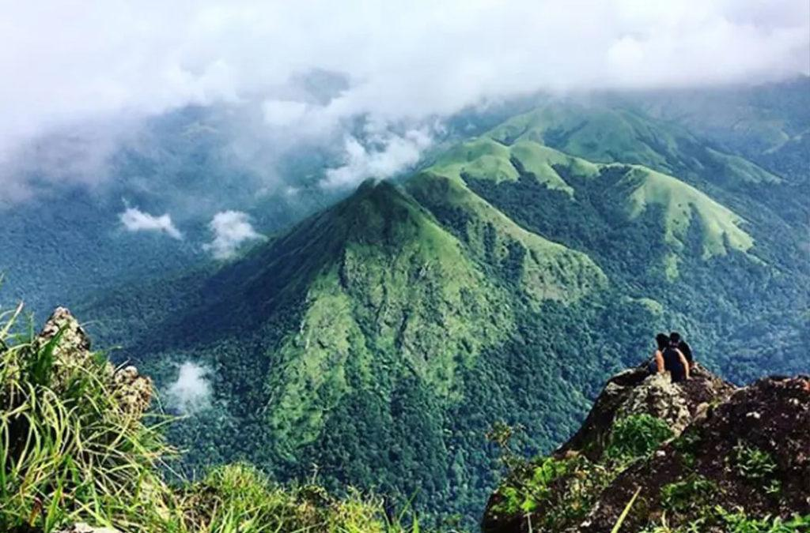 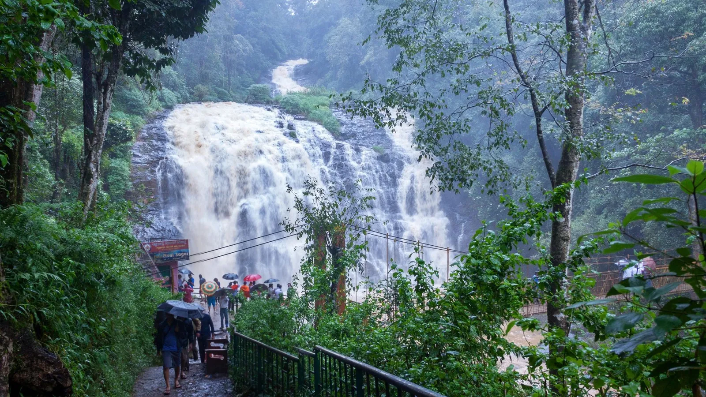Flaunting the tropical wonders of the Western Ghat of Karnataka, this Scotland of India is a regnant summer refuge with ligneous slopes, rich biodiversity, mesmerizing cascades, as well as its a treasure of inimitable heritage. Coorg posses a heart-warming expansion of spice and coffee plantations. One of the perfect places to visit in South India for a wildlife enthusiast. Explore the nature's most beautiful wildlife reserves of Nagarhole, Dubare, and Pushpagiri. Places to visit: Tadiandamol Peak, Brahmagiri Hill, Iruppu Falls, Golden Temple, coffee estate Things to do: Coorg hosts mind-blowing adventures, ranging from camping, trekking and rock climbing to microlight flying and white-water rafting
3. Kodaikanal — The Princess of Hill Stations
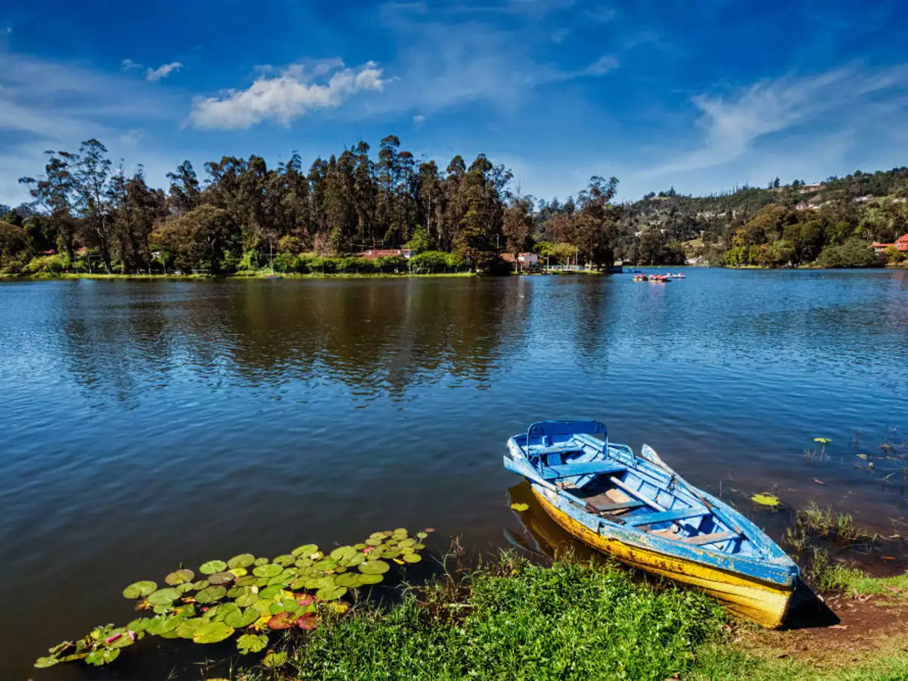 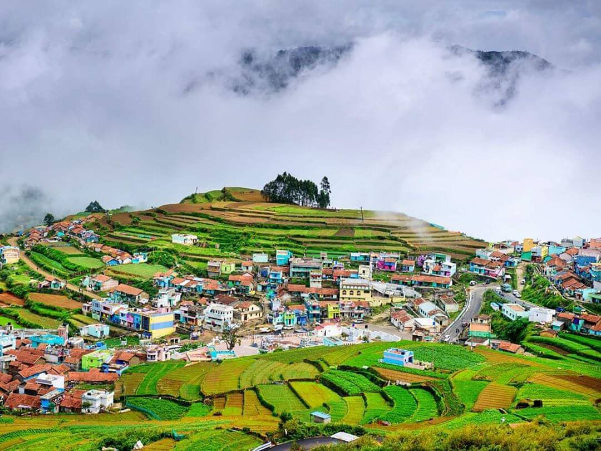Kodaikanal is to Bangaloreans what Darjeeling is to Kolkatans or what Nainital is to Delhiites. Waterfalls, valleys, meadows, grasslands, forests, and lakes of the quaint hill station of Tamil Nadu make it one of the best places to visit in South India and a perfect summer holiday destination from the peninsula. From cycle rides to yoga, boat rides to treks Kodaikanal has a lot of adventures activity within its heart to offer to its tourists.Places to visit: Kodaikanal Lake, Bryant Park, Coaker’s Walk, Pillar Rocks, Dolphin’s Nose rock, Shembaganur Museum of Natural History, and Bear Shola Falls Things to do: Experience Brocken Spectre at Coakers’ Walk, ride a rowboat or pedalo at Kodaikanal Boat Club, cycle around the Kodai Lake, take a trek to Kukkal Caves, and practice yoga at the Kodaikanal Yoga Centre
4. Ooty — One of few toy-train cities in India
 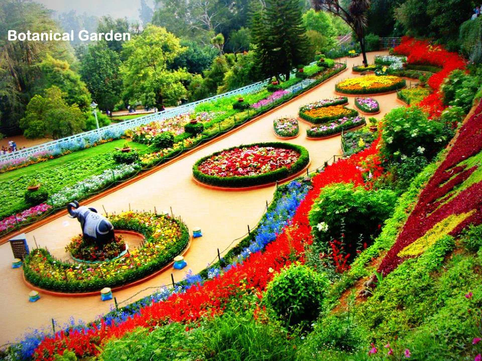
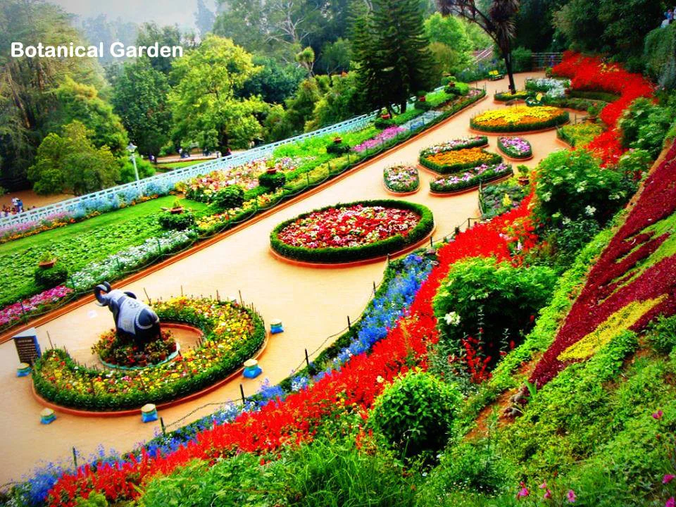
One of the much-acclaimed scenic hot-spot in Tamil Nadu to spend your holidays in South India. Situated in the Nilgiri Blue Mountains hills, the hill station is often called the Queen of Hills. The famous toy train takes you through the nearby lush hills. The little hill station also offers a lot of places to visit and adventure activities to its visitors.Places to visit: Doddabetta Peak, Ooty Lake, Emerald Lake, tribal Toda huts, Deer Park, Upper Bhawani Lake, Avalanche Lake, St Stephen’s Church, and Kalhatty Waterfalls Things to do: Ride the Nilgiri Toy Train, horse riding, boating in Ooty Lake, mountain biking in the Blue Mountains, and hang gliding at Kalahatti (20 km from Ooty)
5. Coonoor — Beckons a Pleasant Summer Holiday
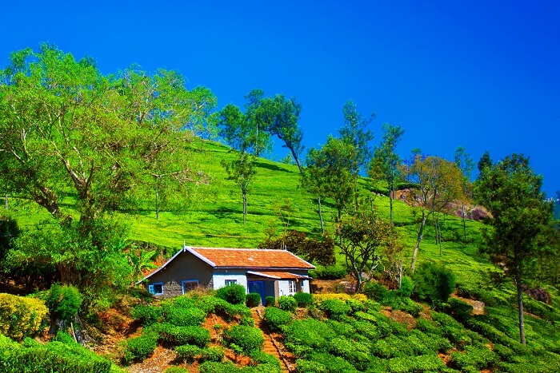 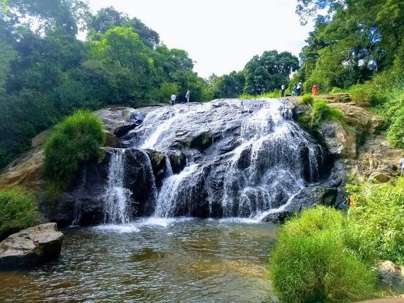Picturesque enchantments, splendid buildings, kitty cottages with astonishing views of nature Coonoor has many hidden gems within its lap to offer its visitors. Away from the hustle-bustle of the mad city life, Coonoor is an ultimate retreat and a serene destination to spent some quality time. Places to Visit: Doddabetta, Sim's Park, Coonoor, Nilgiri Mountain Railway, Catherine Falls, Dolphin Nose View Point, Tiger Hill Things to do: St. Catherine’s falls is a popular attraction in Coonoor, for a magnificent view of the falls visit the top of Dolphin’s nose, yet another place to visit in Coonoor is the Droog Fort which was used by the Tipu Sultan, for Golf lovers, Wellington Golf Course will fulfill your sporting spirit
6. Alleppey — Venice of India
 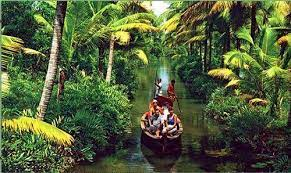
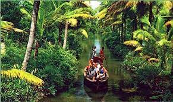
Cannot afford to visit Venice? Visit the Venice of the East at Alleppey commonly known as Alappuzha. Notably famous for its remarkable backwater, the city of Alleppey in Kerala is also known for its mesmerizing beaches, lagoons, ancient temples, and Ayurveda wellness centers. Dotting the coastline of the Arabian Sea, Alleppey is the oldest planned backwater town of Kerala. The backwaters coupled with houseboats and the tropical village life makes Alleppey worth a visit.Places to Visit: Kerala Backwaters, Alappuzha Beach, Andhakaranazhi Beach, Kayamkulam Lake, Kakkathuruthu Island, Pandavan Rock. Things to do: Take a Boat Tours, Rejuvenate with Ayurveda and Spa pampering, Relish some spiritualism at the temples and churches around, Shop at Alleppey’s famous markets, Witness the practicing sessions of Snake Boat Races, Swim through the sunsets at Pozhiyoram beach, Splurge on the authentic seafood.
7. Kanyakumari — The Land of Three Seas


Located at the confluence of Bay of Bengal, Indian Ocean, and the Arabian Sea, Kanyakumari is the place where two seas meet an ocean. The city enjoys a unique identity for hosting astounding sunrise as well as sunset views from its beach. Places to Visit: Kanyakumari Beach, Sunset View Point, Courtallam Falls, Gandhi Memorial, Our Lady of Ransom Church, Bhagavathy Amman Temple, Kanyakumari Wax Museum. Things to do: Enjoy a ferry ride to visit Vivekananda Rock and explore various other attractions like Our Lady of Ransom Church, Padmanabhapuram Palace, Tsunami Monument, Thiruvalluvar Statue and Kanyakumari Devi Temple. Relax at the beaches and enjoy the authentic South Indian vegetarian cuisines.
8. Mamallapuram (Mahabalipuram), Tamil Nadu
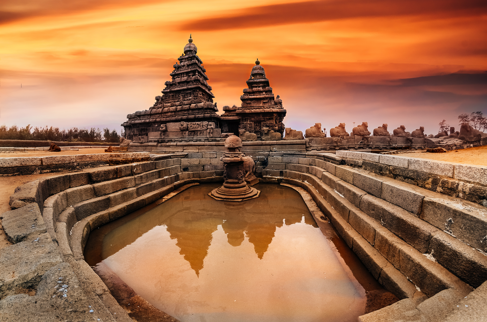 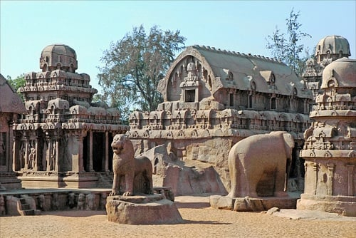Mahabalipuram (also known as Mamallapuram) is a beach town with a thriving backpacker and surfing scene, an hour or so south of Chennai. It's also renowned for its stone sculpture industry, so set some money aside to shop! Other attractions are the Shore Temple, Pancha Rathas (temples sculptured in the shape of chariots), and Arjuna's Penance (a huge carving on the face of a rock depicting scenes from the Mahabharata). A classical dance festival happens there every year from late December to late January. The many beach resorts in the area make Mahabalipuram a popular getaway from Chennai.
9. Madurai, Tamil Nadu
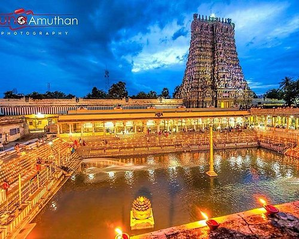 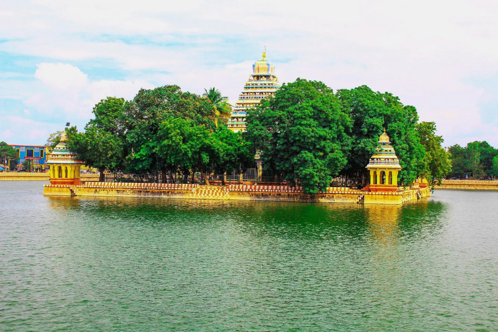Ancient Madurai is home to the most impressive and important temple in South India, the Meenakshi Temple. If you only see one south Indian temple, this temple should be it! The city of Madurai is more than 4,000 years old, and has remained a major center for Tamil culture and learning. The old traditional part of the city is fascinating to explore on foot. These days, Madurai attracts pilgrims and tourists in equal numbers. The two-week long Chithirai Festival, featuring a re-enacted celestial wedding of God and Goddess, is also held in Madurai during April and May each year. It's worth visiting some of the magnificent temples in South India too.
10. Pondicherry
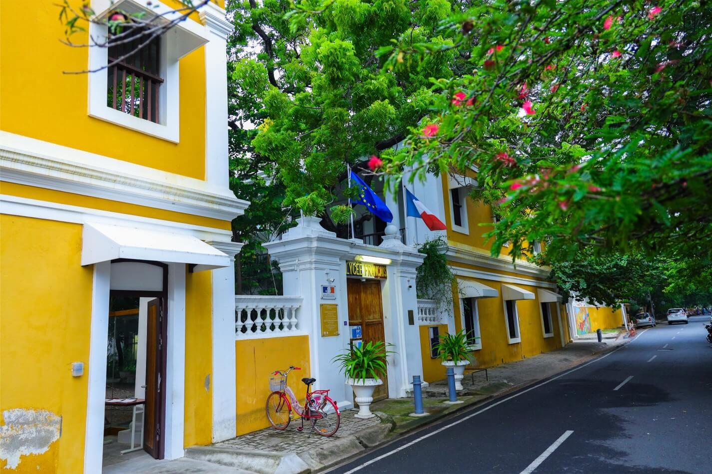 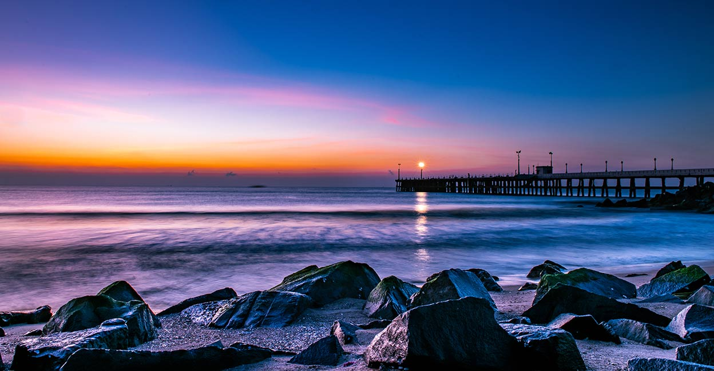Pondicherry (also known as Puducherry) was a former 18th century French colony and remains a separate union territory on the east cost of Tamil Nadu. It retains a distinctly French flavor and provides a delightful break. Wander around the atmospheric French Quarter and along the Promenade, soak up the peaceful atmosphere, dine in delicious restaurants, and browse the boutiques.